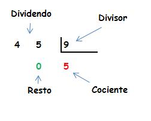

La división es una de las operaciones básicas de las matematicas, que consiste en separar en partes iguales un total.
Los símbolo que representan a la división en matematicas son: (÷), dos puntos (:) o barra oblicua (/).
El signo para la división se ubica entre el dividendo y el divisor, siendo, el dividendo la parte total y el divisor
el número de partes iguales que se quiere separar.
Por ejemplo.
si se quiere dividir 20 unidades en 4 partes iguales se expresaría de la siguiente manera: 20÷4, 20:4, 20/4.
Los términos de la división son:
Dividendo: es el número que vamos a dividir
Divisor: es el número por el que vamos a dividir
Cociente: es el resultado
Resto: la parte que no se ha podido distribuir

Video alucivo a la realización de la división de una cifra
El video a continuación muestra de manera didáctica como es la realización de la division de una cifra.
Video alucivo a la realización de la división de dos cifra
El video a continuación muestra de manera didáctica como es la realización de la division de dos cifra.
Video alucivo a la realización de la división de dos cifra
El video a continuación muestra de manera didáctica como es la realización de la division de dos cifra.
NOTA: de la explicación de realización de la división de tres cifras, con las demás cifras (4,5,6,...)
el procedimiento es similar para las demás diviciones que posean más de tres divisores.